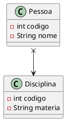
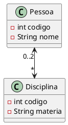
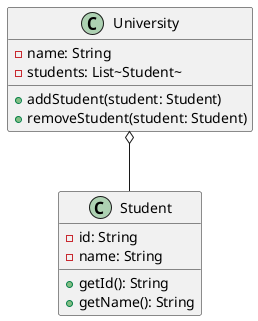
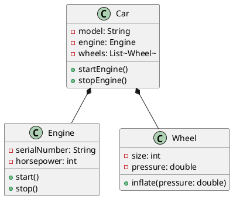

Engenharia De Software III - Aula 02
Relacionamentos no Diagrama de Classes
Associações
Para realizarmos uma associação entre duas classes nós podemos usar uma linha. Uma linha sem nenhum desenho nas pontas, onde são “alojadas” nas classes não representa muita coisa para o desenvolvedor, senão pela liberdade dele em realizar conforme quiser.
No entanto, há as associações não navegáveis e
associações navegáveis. As primeiras são
representadas por um x saindo da classe. As
segundas, são representadas pela seta, bem como
na herança.

Na foto acima, temos a classe Pessoa como
associação não navegável, enquanto Disciplina
sendo a associação navegável.
Mas o que de fato significa essa associação?
As associações demonstram para o desenvolvedor
que uma classe irá utilizar recursos da outra.
Na foto, a classe Pessoa está utilizando dados
da classe Disciplina. Não navegável é de onde
eu “parto/saio” e navegável é para onde eu vou.

No exemplo acima, mostro uma possibilidade de
ambas as classes estarem acessando dados uma
das outras. Ou seja, em algum momento Disciplina
poderá receber/acessar dados da Pessoa e
vice-versa.
Note que há um índice de multiplicidade, onde
uma pessoa pode ter várias disciplinas, no entanto
disciplina pode não ter nenhuma pessoa, ou no máximo
duas.
(obs: Ficou difícil de ver os números, mas há um
0..2 no lado da Pessoa e um * no lado da Disciplina)
Diferença entre Herança e Associação
Herança nós pegamos tudo da Superclasse, enquanto Associação nós somente acessamos o dado, lemos o que representa aquele dado.
Agregação
Agregações representam um tipo de relacionamento “tem um/uma”. “Como assim?” - simples, pensemos no seguinte exemplo:
- Uma universidade tem vários alunos (1 para muitos)
- Alunos podem exeistir sem a universidade
- Tanto como a universidade pode existir sem Alunos
- Se o objeto/classe
Universidadedeixa de existir, os alunos continuarão existindo.

Composição
Composições são o contrário da agregação, sendo considerados relacionamentos “possuem um/uma”. Veja o exemplo abaixo:
- Um carro possui rodas e motor;
- As rodas e o motor, sem o carro, não fazem sentido;
- Se um carro é deletado, seu motor e suas rodas também são deletados.
